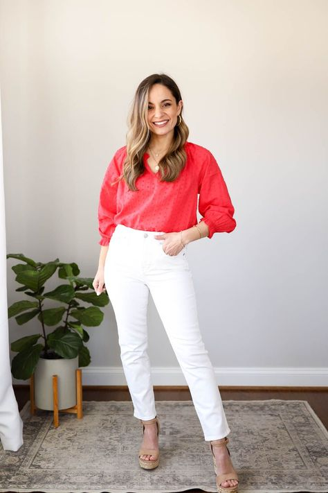

WHITE T-SHIRT
Women find a man in a plain white T-shirt up to 12 per cent more attractive, scientists claim. A plain white T-shirt can create an illusion that broadens the shoulders and slims the waist, producing a more V-shaped body, which is a top sign of masculinity
WHITE DRESSES
So if you're wondering how to accessorize a white dress for formal party, metallics are the way to go. If you want to keep it elegant, go minimal on bling, and try light chain accessories such as a simple pendant chain necklace and a chain bracelet. Crystal can work well, too
PLEATED SKIRTS
If this skirt looks familiar to you, there's a good reason for that: it's everywhere at the moment! Nearly every major celebrity, from Zendaya to Nicole Kidman, has worn this '00s-inspired bottom, inspiring bunch of knockoffs

CAUSAL HOODIES
If you like it stylish and casual at the same time, you could combine your hoodie with a leather jacket. Then, if you also include a hat and sunglasses, you can create a laid-back
WHITE SHOES
For many years, fashion experts insisted that white shoes should only be worn before Labor Day. The reasoning was that white was a summer color, and wearing white shoes after the end of summer would be considered gauche. However, times have changed, and white shoes are now considered acceptable for year-round wear.
GOLD JEWELLERY
f you're warm toned, you'll look most harmonious when wearing gold jewelry. In terms of clothing, go for colors such as brown, copper, bronze, and red. For cool toned people, silver jewelry, and clothes in shades like blue, gray, and lilac are best
DARK BLUE JEAN
Neutrals always work with other neutrals, so feel confident in pairing your black jeans with white, grey, cream and navy and button-ups. Grey and white shirts create a clean combo, while a monochromatic black shirt and jeans pairing adds subtle contemporary edge.
FULL HAND TOPS
Take the ends of your long sleeves and roll them up, scrunching them around the elbow. If you're wearing a dress shirt, unbutton the cuffs or lower half of the sleeve before rolling anything up. For a smooth but casual look, try to keep the sleeves bunched around the elbow.
STUD EARING
Studs are the safest choice for beginners as they're easy to wear and more versatile than other styles. Studs give the edge of wearing an earring but with discretion.
BLAZZERS
Image result for how to style blazer It can be dressed up for the office with your standard Oxford shirt, chinos and a pair of smart brown shoes and can easily transition to off-duty chic when paired with jeans, a tee and loafers.
HATS
They look stylish with every outfit and something about the time of year makes wearing a hat very stylish and you'll always look good in a hat in the fall. In the Fall, you can wear a hat with anything you wish. Jeans, dresses, blazers, skirts, you can even dress it up with trousers and heels.
BLACK JEANS
Neutrals always work with other neutrals, so feel confident in pairing your black jeans with white, grey, cream and navy and button-ups. Grey and white shirts create a clean combo, while a monochromatic black shirt and jeans pairing adds subtle contemporary edge

BLACK CROP TOP
A black crop top can be styled so many different ways, but the classic monochrome look never fails. Instead of defaulting to jeans, dress your top up with leather trousers and a sexy pump. Top it off with some oversized sunnies to tie your look together.
WHITE SHORTS
Image result for how to style white shorts It goes with every color under the sun. White also pairs well with prints and patterns, from florals to plaids to ikat prints. You'll want to stick with colors and patterns that work well with your skin tone and your overall style.
WHITE SHIRT
A white shirt can be worn day or night, with jeans, a pantsuit or even a full skirt; your options are truly endless. Considered one of the most versatile wardrobe staples, a white shirt works for warm and cool seasons alike, because you can wear it with your favorite shorts, or even layer it under a sweater.
RIPPED JEAN
Ripped jeans make an everyday look feel casual-cool, but pairing them with too many baggy or oversized pieces can make an outfit seem lazy. When you're styling your jeans, keep only one or two parts of the outfit oversized–and be sure to balance the look out with other slim fit staples.
FLORAL TOPS
One of the great things about a floral print is that there's usually another color involved to balance out the main color, be it bold or subtle. Counteract the bright color with neutral counterparts—white or off-white jeans and sneakers will complete your style canvas and go well with summertime weather and activities.09-Jul-2019
